From a photon to a forest
A forest is crystallized sunlight.
Almost every atom of a ponderosa pine is assembled from four free, abundant things: light, air, water, and a pinch of soil minerals. Photosynthesis captures sunlight and writes it into the bonds of a simple sugar — and the tree spends a little of that captured energy to rebuild the sugar into the cellulose, hemicellulose, lignin, fats, and resin whose chemical bonds hold the energy that the study measures. This page follows that build, step by step.
…then glucose is rebuilt into five higher-energy molecules — each through its own chain of enzyme reactions:
- →
- UDP-glucose
- →
- cellulose↗
- →
- nucleotide sugars
- →
- hemicellulose↗
- →
- phenylalanine
- →
- coniferyl alcohol
- →
- lignin↗
- →
- acetyl-CoA
- →
- fatty acids
- →
- fats↗
- →
- IPP · DMAPP
- →
- terpenes
- →
- resin↗
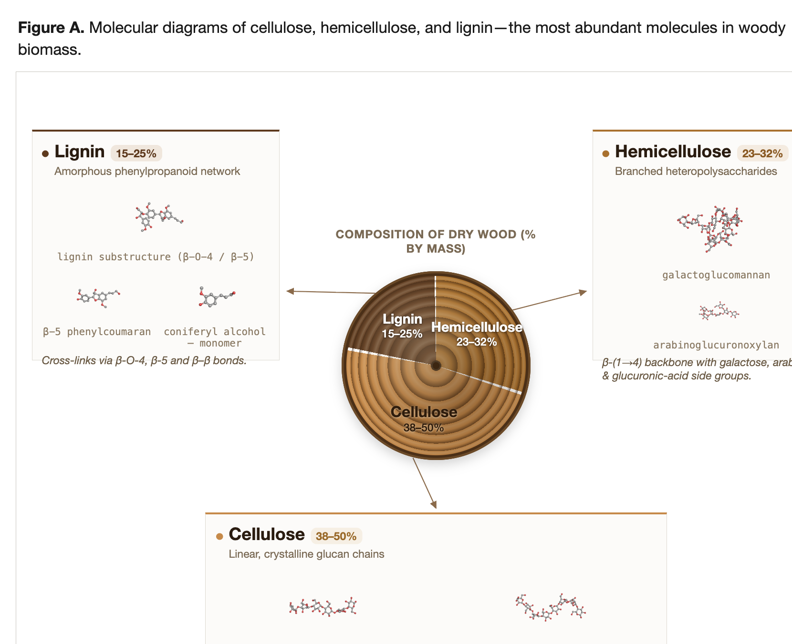
The three molecules this page follows make up most of a tree's dry mass — composed in Claude Design from this project's 3D molecule renders.
Capturing the light
Photosynthesis splits water and fixes carbon dioxide from the air into sugar.
Inside a needle's chloroplasts, sunlight does two jobs. It splits water — releasing the oxygen a forest exhales — and uses the energy to grab carbon dioxide from the air and stitch its carbon into sugar. The result is glucose, shipped through the tree as sucrose, the raw material for everything that follows. The headline facts are worth stating plainly: the carbon in wood comes from thin air; the hydrogen and the released oxygen come from water; the energy comes from sunlight.
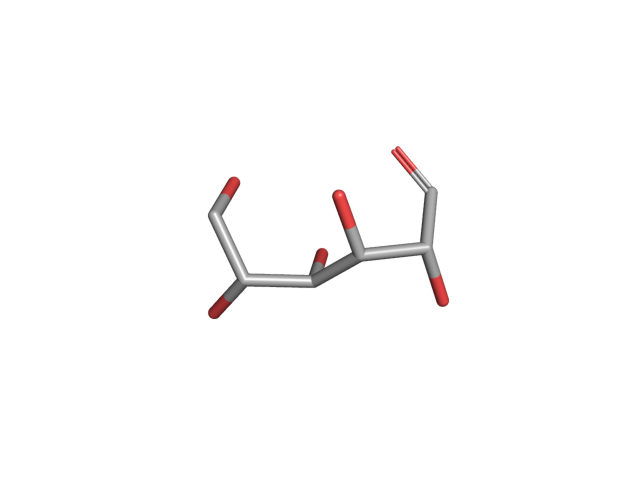
Go deeper: the light reactions and the Calvin cycle
The chloroplast separates the work into two stages. In the light reactions (on the thylakoid membranes), chlorophyll — a porphyrin ring with a single magnesium ion at its heart — funnels light to two reaction centres. At Photosystem II a manganese cluster (Mn₄CaO₅) splits water: 2 H₂O → O₂ + 4 H⁺ + 4 e⁻. The electrons run a "Z-scheme" (PSII → plastoquinone → cytochrome b6f → the copper protein plastocyanin → Photosystem I → ferredoxin), building NADPH, while the proton gradient drives ATP synthase to make ATP.
In the Calvin cycle (in the surrounding stroma), the enzyme RuBisCO attaches CO₂ to a five-carbon acceptor; the product splits into two molecules of 3-phosphoglycerate, which ATP and NADPH reduce to the three-carbon sugar G3P. That reduction is the exact moment solar energy becomes chemical-bond energy. It takes six turns (≈18 ATP + 12 NADPH) to net one extra sugar; five of every six G3P are recycled to regenerate the acceptor. The triose sugar is exported to the cytosol and assembled into sucrose, with surplus carbon banked as starch.
Common myth: the released O₂ does not come from CO₂ — it comes from the water that is split at Photosystem II.
The Calvin cycle — turning CO₂ into sugar (stroma):
- CO₂from air
- RuBisCO+ RuBP, fixation
- 3-phosphoglycerate2 × C3
- PGKATP
- 1,3-bisphosphoglycerate
- GAPDHNADPH → energy stored
- G3Ptriose phosphate
- 6 turns, then cytosol
- glucose · sucrose
Cellulose — spun at the cell's skin
The main mass of wood is glucose strung into crystalline cables.
Cellulose is the most abundant polymer in wood (~40–45% of softwood) — long chains of glucose linked β-1,4. What makes it special is where it's made: rosette-shaped machines sitting in the cell's outer membrane spin the chains straight out into the wall, where about eighteen of them crystallise side-by-side into a stiff, water-shedding microfibril — the load-bearing cable of wood.
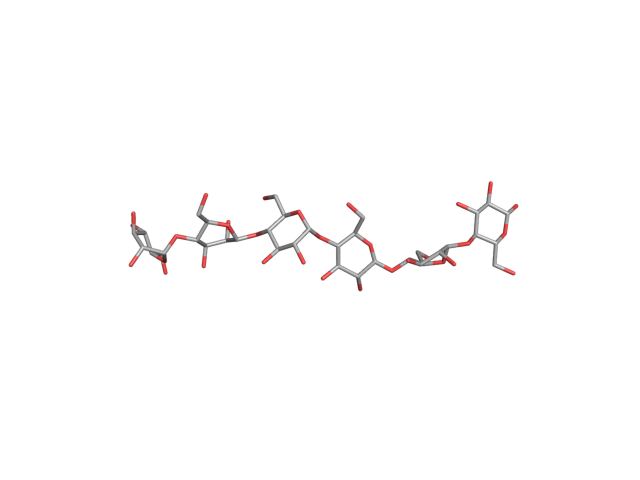 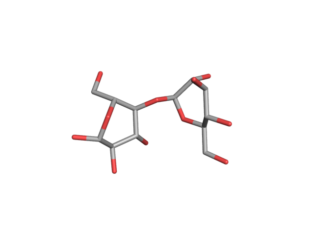 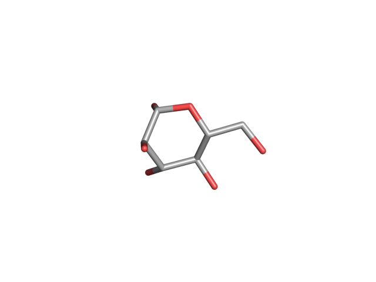
Go deeper: UDP-glucose, rosettes, and a machine that walks
The actual building block isn't free glucose but UDP-glucose — "activated" glucose carrying its own reactive energy (made from sucrose by sucrose synthase, though recent work shows other routes can supply it too). Cellulose-synthase (CesA) proteins assemble into six-lobed rosettes in the plasma membrane — current evidence favours ≈18 subunits, built from three secondary-wall isoforms (conifers express the orthologous triplet in xylem). Each cycle adds one glucose to the non-reducing end, releasing UDP; because alternate units are flipped 180°, the true repeat is cellobiose, and the β linkage (not the α of starch) is exactly why cellulose is rigid and indigestible.
As the new fibril crystallises and anchors in the wall, the resistance pushes the enzyme forward through the fluid membrane — the machine walks while the fibril stays put. Cortical microtubules beneath the membrane act as guide rails (via the CSI1/POM2 tether), setting the grain of the wood. This is the headline contrast with the matrix sugars next door, which are made indoors in the Golgi.
Sugar to crystalline fibre, at the plasma membrane:
- sucrosefrom the phloem
- sucrose synthase+ UDP
- UDP-glucoseactivated
- CesA rosetteplasma membrane · β-1,4
- β-1,4-glucan chain
- H-bondingcrystallization
- cellulose microfibril
Hemicellulose — assembled indoors, shipped out
The flexible matrix that ties the cellulose cables together.
Hemicelluloses fill the space between cellulose fibrils and lignin. In softwoods the main one is galactoglucomannan, with a minor arabinoglucuronoxylan — branched chains built from a toolkit of several different sugars. Unlike cellulose, they are assembled inside the Golgi and delivered to the wall in vesicles.
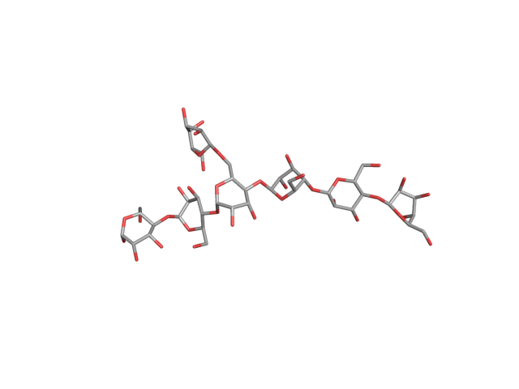 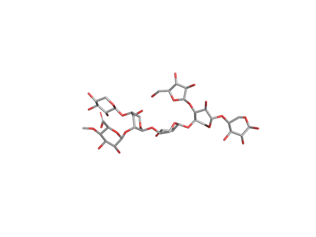 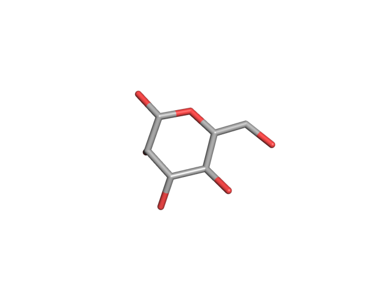 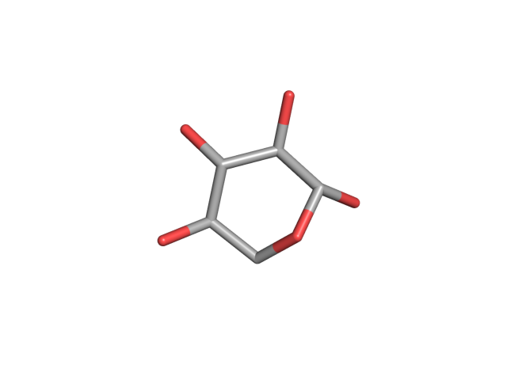
Go deeper: nucleotide sugars and Golgi glycosyltransferases
First the cytosol builds a set of activated nucleotide sugars from the central hub UDP-glucose: UDP-galactose, UDP-glucuronic acid → UDP-xylose → UDP-arabinose, plus GDP-mannose from the fructose-6-phosphate pool. These are imported into the Golgi, where the chains are polymerised and decorated. The galactoglucomannan backbone is built by a cellulose-synthase-like enzyme (CSLA, using GDP-sugars) — but the xylan backbone is built by entirely different families (GT43/GT47), and the branches are added by yet others: galactose, 4-O-methyl-glucuronic acid (its methyl from the cofactor SAM), and arabinofuranose, plus O-acetyl groups from acetyl-CoA.
Worth knowing: all these sugars share the same (CH₂O)ₙ make-up, so a mannose-rich matrix is no more energy-dense than a xylose-rich one. Conifer wood burns hot because of its lignin and resin, not its hemicellulose.
Building the sugar toolkit (cytosol), then assembling in the Golgi:
- UDP-glucosethe hub
- UGD2 NAD⁺
- UDP-glucuronic acid
- UXS− CO₂ (decarboxylation)
- UDP-xylose
- 4-epimerase / mutase→ UDP-arabinose
- UDP-Xyl · UDP-Ara · UDP-Gal · GDP-Mannucleotide sugars
- Golgi glycosyltransferasesCSLA · GT43/47 · branches
- galactoglucomannan · xylan
Lignin — the glue that makes wood
A tough, energy-dense aromatic network, polymerised by chemistry alone.
Lignin is what turns soft cellulose into wood: a water-shedding, decay-resistant, energy-dense polymer that fills and stiffens the wall. Conifers build it almost entirely from one monomer, coniferyl alcohol, which is exported into the wall and then linked together by a template-free radical reaction — so every lignin molecule is a unique, irregular network rather than a regular polymer.
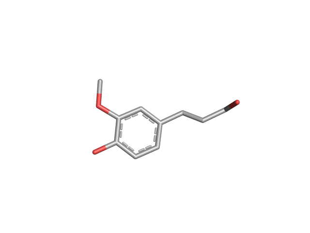 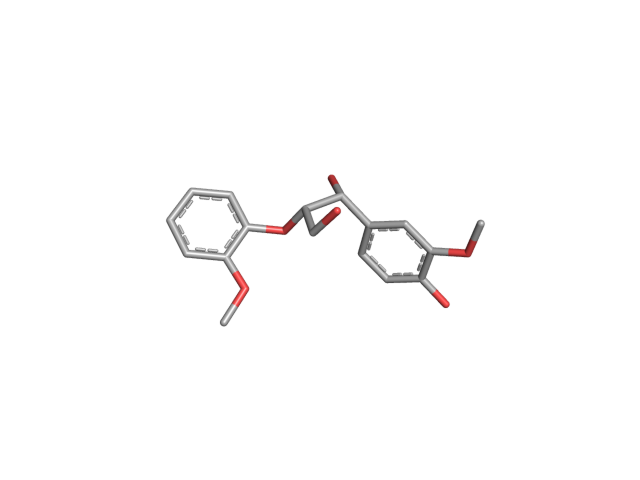 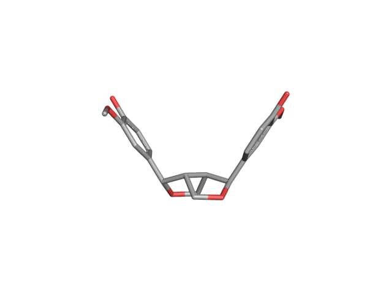 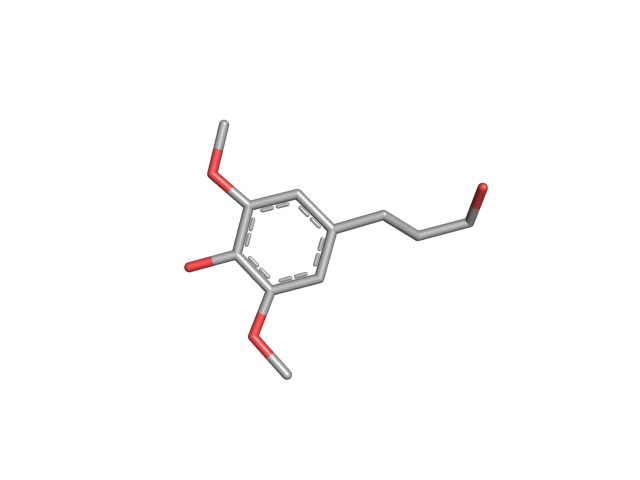
Go deeper: the shikimate & phenylpropanoid pathways, then radical coupling
Stage 1 — make the amino acid. In plastids, the seven-step shikimate pathway condenses two photosynthetic intermediates (PEP and erythrose-4-phosphate) into the amino acid phenylalanine (its nitrogen drawn from soil). Animals lack this pathway — which is why phenylalanine is "essential" in our diet, and why the herbicide glyphosate, which blocks one shikimate enzyme, kills plants but not us.
Stage 2 — the phenylpropanoid trunk. PAL strips the amino group (→ cinnamic acid); a P450 enzyme adds a hydroxyl (→ p-coumaric acid, using O₂); 4CL attaches coenzyme A. Stage 3 — the monolignol branch. A methyl group from the cofactor SAM installs the single methoxyl that defines a guaiacyl unit, and two NADPH-driven reductions finish coniferyl alcohol. Softwoods make essentially no sinapyl (syringyl) alcohol because they lack the enzyme F5H — which is exactly why softwood lignin is guaiacyl-rich.
In the wall, copper laccases (using O₂) and iron peroxidases (using H₂O₂) pull one electron off each monomer's phenol, making a radical; two radicals couple — most often at the β-O-4 ether, also β-5, β-β, and 5-5. There's no DNA template, so the bonds form by chemistry alone, giving a different, irregular network every time — though "dirigent" proteins can steer specific couplings (such as the symmetric pinoresinol). Because lignin's aromatic rings are far more reduced than sugar rings, it is the most energy-dense major fraction of wood (~23–26 MJ/kg).
- the monolignol pathway → coniferyl alcohol
- phenylalaninefrom the shikimate pathway
- PAL− NH₃
- cinnamic acid
- C4H · P450+ O₂
- p-coumaric acid
- 4CL+ CoA, ATP
- p-coumaroyl-CoA
- HCT → C3′H → CCoAOMT+ OCH₃ (from SAM) = guaiacyl
- feruloyl-CoA
- CCRNADPH
- coniferaldehyde
- CADNADPH
- coniferyl alcoholthe softwood monolignol
- laccase · peroxidaseO₂ / H₂O₂ · radical coupling
- lignin network
Fats — concentrating the energy
The most energy-dense molecule a plant makes, built from two-carbon units.
Fats pack more energy per gram than anything else a plant builds, because their long carbon chains are highly reduced — rich in C–H bonds and almost free of oxygen. Plants assemble them from sugar-derived two-carbon units, mostly as a concentrated reserve in seeds.
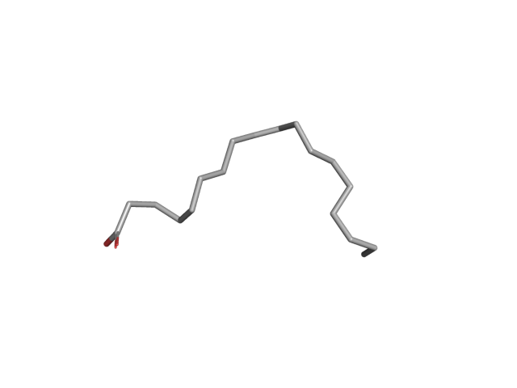 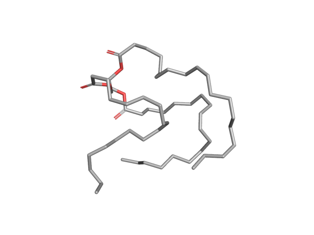 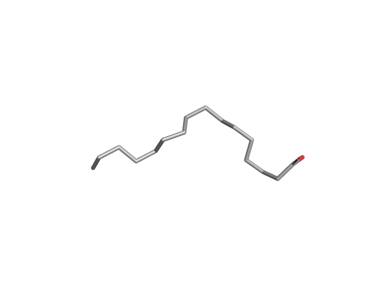
Go deeper: plastid fatty-acid synthesis and the Kennedy pathway
Sugar is broken down to acetyl-CoA, and fatty acids are built inside the plastid by a bacteria-like assembly line. The committed step is acetyl-CoA carboxylase (making malonyl-CoA); condensing enzymes then add two carbons per cycle — each followed by NADPH-driven reductions — up to 16- and 18-carbon saturated chains. The first double bond, which makes oleic acid, is added by a separate soluble stearoyl-ACP Δ9 desaturase. The chains are then exported to the endoplasmic reticulum and assembled three-at-a-time onto a glycerol backbone (the Kennedy pathway) to make a triacylglycerol, stored in oil bodies. Conifers add an unusual signature: a Δ5 desaturase makes "pinolenic"-type fatty acids found almost nowhere else.
Why so energy-rich: combustion energy tracks how reduced a molecule is. Fats yield ~37–39 kJ/g versus ~16–17 kJ/g for carbohydrates, whose ring carbons already each carry an oxygen.
- sugar → two-carbon units → fat
- glucose
- glycolysis → PDHin the plastid
- acetyl-CoA2-carbon unit
- ACCaseATP, + CO₂ (committed step)
- malonyl-CoA
- fatty-acid synthase7 cycles, NADPH
- stearoyl-ACP18:0, saturated
- stearoyl-ACP Δ9 desaturaseadds the double bond
- oleic acid18:1
- Kennedy pathway×3 on glycerol, at the ER
- triacylglycerol
Resin — the volatile, flammable fraction
A small, energy-dense, defensive fraction that also drives how conifers burn.
Conifers make oleoresin — the turpentine (pinenes) and rosin (resin acids) you can smell in a pine forest. It floods wounds to repel and trap bark beetles and seal injuries, and because it is a highly reduced hydrocarbon, it is extraordinarily energy-dense — a few percent of the biomass that carries an outsized share of stored energy and helps resinous conifer fuels burn so fiercely.
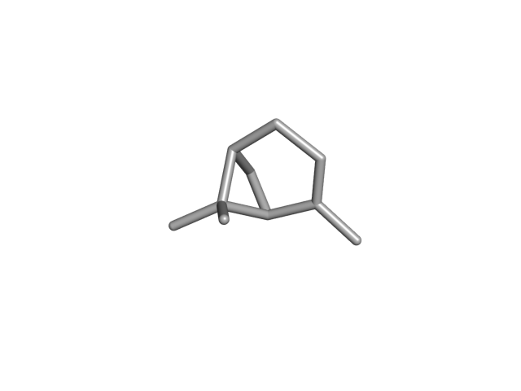 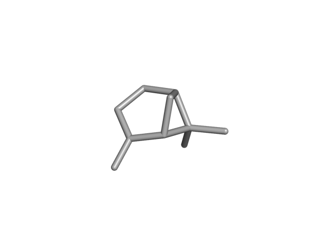 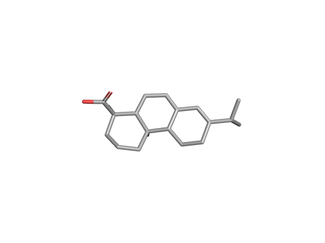
Go deeper: the isoprenoid pathways and resin ducts
Terpenoids are built from a universal five-carbon unit (isopentenyl diphosphate) made by two routes — the MEP pathway in plastids and the MVA pathway in the cytosol. Joining these units gives a C10 precursor that terpene synthases cyclise into the pinenes (conifer versions unusually need manganese), and a C20 precursor that a bifunctional diterpene synthase folds into abietadiene; cytochrome P450 enzymes then oxidise it to resin acids like abietic acid. The finished oleoresin is stored under pressure in a network of resin ducts lined by living cells, and the whole system is switched up by wound signals (jasmonate) — making resin a regulated immune response. At ~40–44 MJ/kg, in the range of petroleum fuels, it is costly to make, so the tree is deliberately banking captured energy into a high-density defensive reserve.
From two-carbon and three-carbon units to the volatile (turpentine) and solid (rosin) fractions:
- monoterpenes → turpentine
- acetyl-CoA · pyruvate + G3P
- MVA · MEPcytosol / plastid
- IPP + DMAPPC5 units
- GPP synthase
- geranyl-PPC10
- pinene synthaseMn²⁺
- α / β-pinene
- diterpenes → resin acids
- IPP + DMAPP
- GGPP synthase
- geranylgeranyl-PPC20
- abietadiene synthasebifunctional cyclase
- abietadiene
- CYP720B · P4503 × O₂ oxidation
- abietic acid
Where every atom comes from
Mostly air and water — with a pinch of soil minerals as the tools, not the fuel.
Step back and the accounting is striking. The bulk of a tree — the carbon skeleton that holds the energy — is built from CO₂ in the air and water. The soil supplies only small quantities of mineral nutrients, and crucially these are never the fuel: they are the catalysts, cofactors, and cross-linkers that build and run the machinery, and they mostly stay behind as ash when wood burns.
- Nitrogen — the usual limiting nutrient; every enzyme and amino acid, chlorophyll, and the huge pool of RuBisCO. Conifers take it up mostly as ammonium and fungal-delivered organic N.
- Phosphorus — the backbone of ATP, NADPH, DNA, membranes, and the activated nucleotide sugars that feed wall-building.
- Magnesium sits at the centre of every chlorophyll; potassium runs the stomata that admit CO₂; sulfur builds cysteine and the methyl-donor SAM; calcium cross-links the wall.
- Iron, manganese, copper — catalytic metals that split water and shuttle electrons in photosynthesis, and that power the very laccases and peroxidases that build lignin.
Pines don't forage alone: they are ectomycorrhizal, partnering with fungi that sheath the root tips and mine nitrogen and phosphorus far beyond the root's reach, traded for photosynthetic sugar.
Part II · releasing it
How nature releases it
Building ran uphill. Releasing runs back down — and there are three main routes: fire, herbivory, and decay. All three do the same chemistry in the end: they oxidize the tree's reduced carbon back to CO₂ and water, returning the solar energy banked in its bonds (minus whatever the burner, browser, or fungus keeps for itself).
But a tree is not chemically uniform — and what each part is made of controls how it burns, whether anything can eat it, and how fast it rots. Energy and decay-resistance both rise with lignin and extractives; the fine, foliage-rich parts are where the easy energy lives:
Approximate dry-mass composition for a pine; ranges vary widely with species, age, site, and assay (e.g. needle data from loblolly pine; heartwood gains resin acids as living cells die). Sapwood and heartwood hold most of the tree's mass and energy — yet in a fire they usually survive, while the lignin- and resin-rich fine fuels carry the flame.
Fire — unzipping the polymers
A flame doesn't burn solid wood; it burns the gas the wood gives off when heated.
Combustion happens in stages. Heat first drives off water, then pyrolysis cracks the cell-wall polymers into flammable gases and tar — and that is what the visible flame burns — leaving behind a carbon-rich char. The polymers come apart at different temperatures, and lignin leaves the most char. Conifer resin and terpenes, with very low flash points (~32 °C) and high energy, help fine fuels catch. Crucially, real fires are incomplete: needles, twigs, and bark flakes carry the flame, while the energy-dense trunk and roots mostly char or survive — so most of a forest's stored energy is not released in any one fire, and some carbon is locked away as long-lived charcoal.
Go deeper: the thermal staircase, char, and incomplete combustion
Each polymer has its own decomposition window. Hemicellulose is least stable and goes first (~220–315 °C); cellulose follows in a sharp burst (~315–400 °C, peak ~340 °C); and lignin decomposes slowly across a huge range (~160–900 °C), yielding ~40–45% of its mass as char. Cellulose pyrolysis is endothermic (it soaks up heat), while hemicellulose and lignin are exothermic.
- waterdrying
- hemicellulosechar ~23%
- cellulosechar ~8%
- ligninchar ~45%
- ~100 °C300500700900 °C
About 70% of dry wood leaves as volatiles that feed the flame; the rest is char that glows and smolders. Burning efficiency is measured by the modified combustion efficiency (MCE): vigorous flaming runs ~0.95–0.99, while smoldering char drops to ~0.65–0.85, releasing more carbon monoxide and smoke. Char oxidation can account for roughly a third of the energy in vegetation fuels — but much char never fully burns. A pine charcoal is ~50–90% carbon and can persist in soils for decades to millennia, so fire both releases energy and banks a slow-cycling carbon residue.
Worth knowing: even a crown fire consumes only ~56–66% of the canopy foliage, and almost none of the bole — incomplete combustion is the rule, not the exception.
Herbivory — renting a microbe
Most of a tree is indigestible to animals — unless they borrow the right enzymes.
Animals eat plants to capture the same bond energy, but there's a catch: no animal makes the enzyme to digest cellulose, and lignin is essentially indigestible. So herbivores either eat the easy, energy-rich tissues — sugars, starch, fats, and protein in foliage and seeds, digested directly to ATP — or they rent gut microbes that ferment cellulose into short-chain fatty acids the animal can absorb (deer and other ruminants, horses, and termites all do this). In conifer forests vertebrate browsing is modest, but insects — above all bark beetles — can kill whole landscapes; conifers fight back with the very terpene resin that also makes them flammable.
Go deeper: gut fermentation and how the energy becomes ATP
A ruminant (deer, elk) houses trillions of microbes that do make cellulases. In the rumen, microbes depolymerise cellulose to sugars and ferment them to volatile fatty acids — acetate, propionate, and butyrate (roughly 70:20:10 on browse) — which the animal absorbs through the gut wall and oxidises for energy. These VFAs supply ~70–80% of a ruminant's energy; the microbes themselves are then digested as protein. Termites do the same for wood, their gut symbionts removing 74–99% of the cellulose.
- how a browser extracts wood energy
- cellulose · hemicellulose
- microbial cellulasesrumen / hindgut symbionts
- sugars
- fermentation→ acetate · propionate · butyrate
- volatile fatty acidsabsorbed by the animal
- β-oxidation · TCA · ox-phosin mitochondria
- ATP~30–32 per glucose
Lignin's last trick: it passes through the gut almost untouched and physically shields the digestible sugars, which is why woody, lignin-rich tissue is poor forage — and why the easy calories are in young needles, sap, and seeds (fat at ~9 kcal/g vs ~4 for carbohydrate). Soluble sugars, starch, fat, and protein need no microbes — the animal's own enzymes handle them directly.
Decay — the slow fire
Fungi and microbes burn wood at room temperature, over years instead of minutes.
Most biomass is neither burned nor eaten — it is decomposed, mostly by fungi. White-rot fungi are the only organisms that fully dismantle lignin, using the same kind of oxidative enzymes (laccases and peroxidases) that built it, and they take the cellulose too. Brown-rot fungi — characteristic of conifer deadwood — skip enzymes for the cellulose and instead deploy a chemical bomb: a Fenton reaction that makes hydroxyl radicals to shred the carbohydrate, leaving a brown, lignin-rich crumble. Bacteria, water, and litter invertebrates pitch in. All of them respire the reduced carbon back to CO₂ + water + heat — the same total energy as burning, just released slowly. Lignin, extractives, and dense heartwood resist all this, which is why heartwood and bark last, and roughly 10–30% of the carbon ends up stabilised in soil rather than respired.
Go deeper: white rot vs brown rot, and how long it lingers
- white rot
- lignin + cellulose
- laccase · LiP · MnPO₂ / H₂O₂ oxidation
- cracked aromatics + sugars
- respiration
- CO₂ + H₂O + heat
- brown rot (conifer-associated)
- cellulose + hemicellulose
- Fenton: Fe²⁺ + H₂O₂→ hydroxyl radical (OH•)
- depolymerised sugars+ brown lignin residue
- respiration
- CO₂ + H₂O + heat
Decay speed tracks composition. Ponderosa needle litter turns over in ~6–13 years (k ≈ 0.08–0.18 yr⁻¹); a fallen white-fir log takes a half-life of ~14 years, and large conifer logs persist for 50–120 years. Gymnosperm wood decays roughly 2–3× slower than angiosperm wood (occasionally 10× for rot-resistant species), and standing dead snags decay far slower than logs on the moist ground. Of the carbon that is decomposed, ~70–90% is respired straight back to CO₂; the remainder becomes humus and soil organic matter — the forest's long-term carbon (and energy) savings account.
Full circle: the enzymes white-rot fungi use to take lignin apart are mechanistic cousins of the laccases and peroxidases the tree used to build it — the same oxidative chemistry, run in reverse.
Charcoal — the carbon that escapes
Burn wood incompletely and you forge a carbon almost nothing can break down.
Not all of it comes straight back as CO₂. When fire burns wood incompletely, it forges a fraction — commonly 10–15%, sometimes up to ~30% — into charcoal (pyrogenic carbon). Heat drives off the volatiles and rearranges what remains into fused sheets of aromatic carbon, approaching the structure of graphite. The microbes and the very enzymes that rot wood find almost nothing to grip, so charcoal persists 10–100× longer than the wood it came from: centuries to millennia in soils, and — once buried in sediment — hundreds of millions of years in rock, as the fossil charcoal (fusain / inertinite) that fills ancient coal. The reduced carbon's chemical energy stays locked in those aromatic bonds the whole time (charcoal is itself a fuel). So fire isn't only a release: it also banks a slow, globally large carbon-and-energy sink — about 256 million tonnes of carbon a year, with the oldest charcoal ~420 million years old, the earliest trace of wildfire on Earth.
Go deeper: why charcoal is so stable — and what it records
Charring temperature sets the structure. Above ~400 °C the leftover carbon condenses into polycyclic aromatic clusters (often >7 fused rings); as temperature climbs the carbon content rises from ~48% in raw wood to ~85% at 600 °C and ~94% at 800 °C, shedding the oxygen-bearing "handles" enzymes need. The interior carbons are bonded only to other carbons, which is why condensed pyrogenic carbon is one of Earth's most decay-resistant organic pools — though it's a continuum, and lightly-charred material is far more labile (some field studies see surprisingly fast loss of that fraction).
Globally, fire converts ~256 Tg C/yr (≈12% of fire's carbon emissions) into pyrogenic carbon, which accumulates to roughly ~200 Pg C in soils and ~480–1440 Pg C in marine sediments. Buried and lithified, charcoal becomes inertinite, a coal maceral that is literally fossil wildfire: Carboniferous coals (≈359–299 Ma) are inertinite-rich (~15–20%, locally 40–50%). Because charcoal only forms and spreads when atmospheric oxygen sits in a "fire window" (≈16–35%), the inertinite in those coals also works as a paleo-oxygen gauge — pointing to a Late-Paleozoic O₂ peak around ~28–30%, well above today's 21%, which fed the era's intense, frequent fires.
It all comes back as heat
Building these molecules runs uphill: sunlight lifts low-energy CO₂ and water into the high-energy C–H and C–C bonds of reduced carbon. The more reduced the molecule, the more energy it stores — which is why the same forest holds its energy so unevenly:
Combustion — or slow decay — simply runs the whole thing backwards: the reduced carbon falls back to CO₂ and water, releasing the solar energy banked in its bonds. That released enthalpy, summed across hundreds of thousands of trees, is what Ecosystems as energy fields measures for a whole landscape.